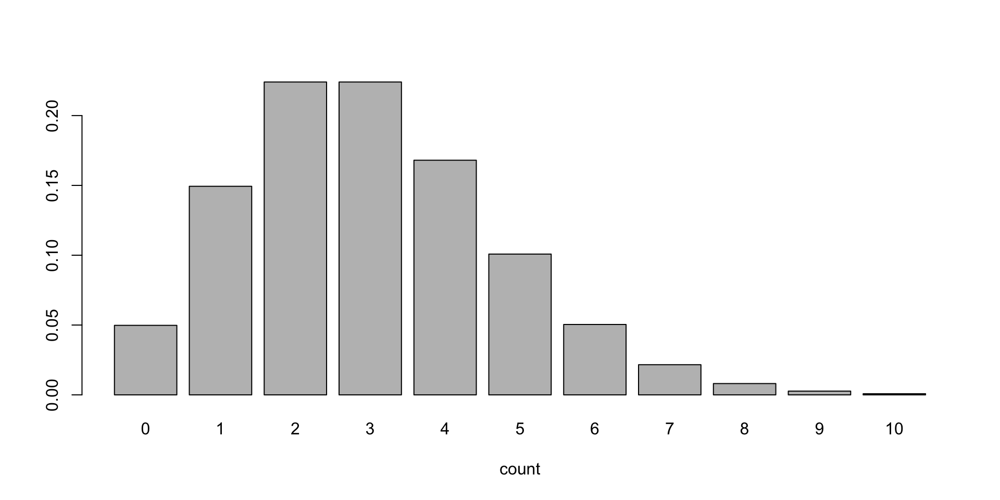
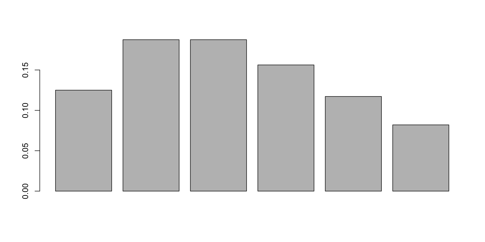
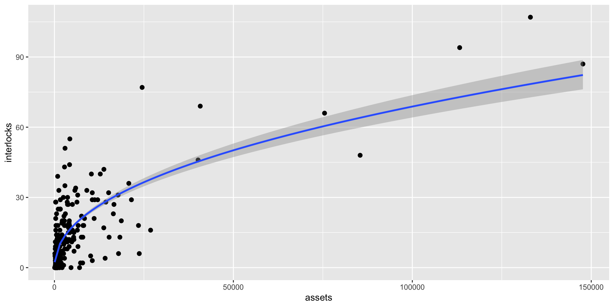
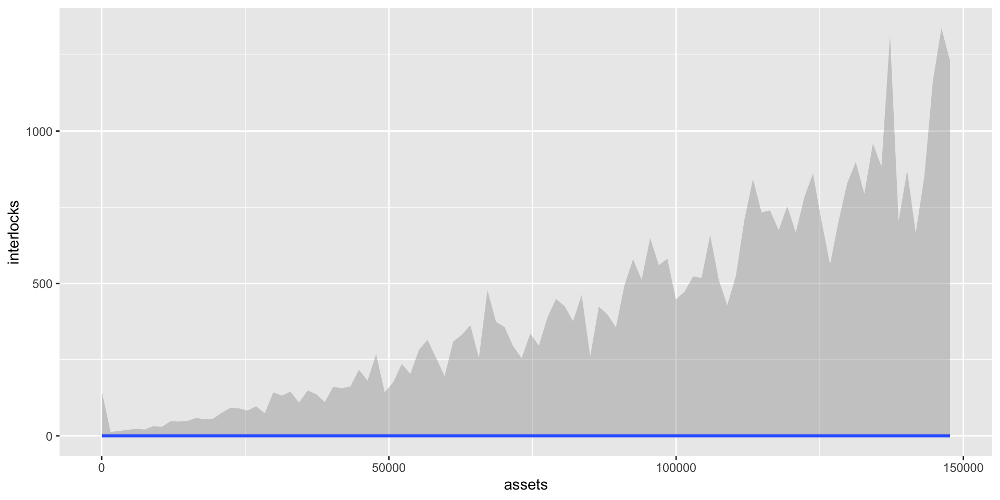
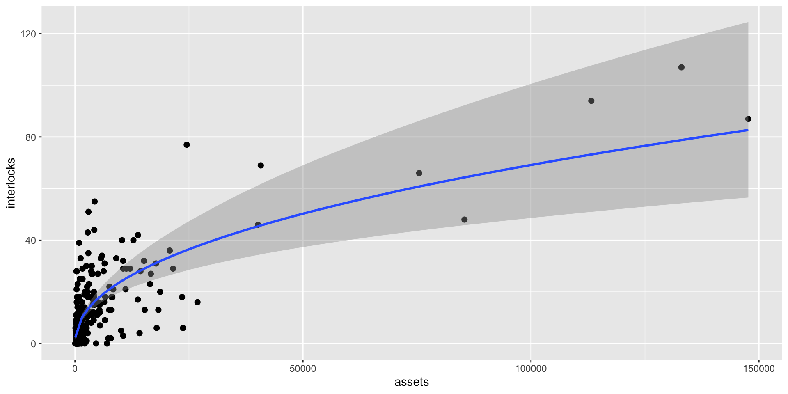
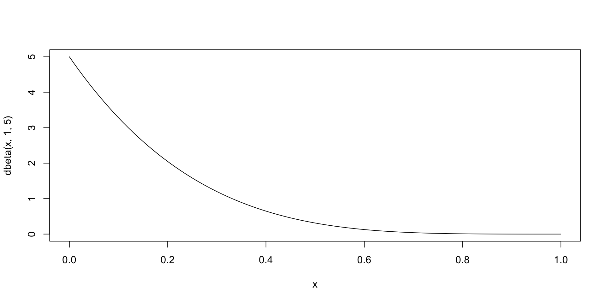
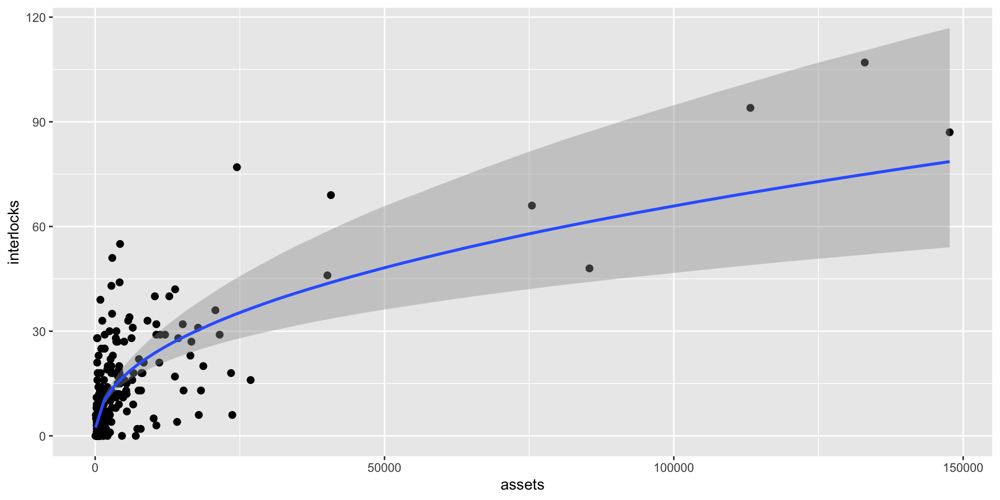
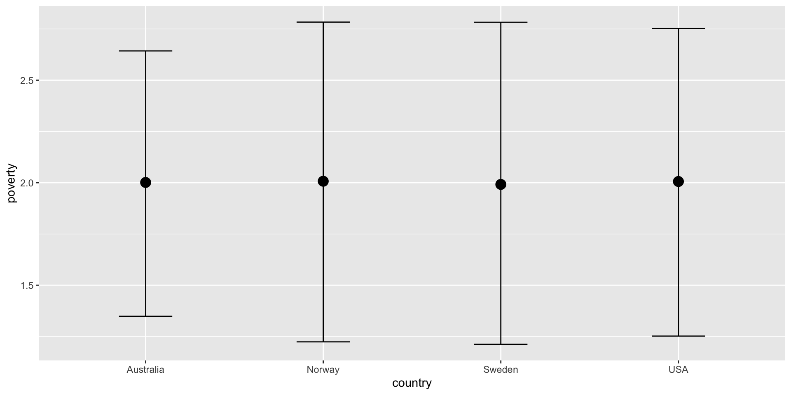
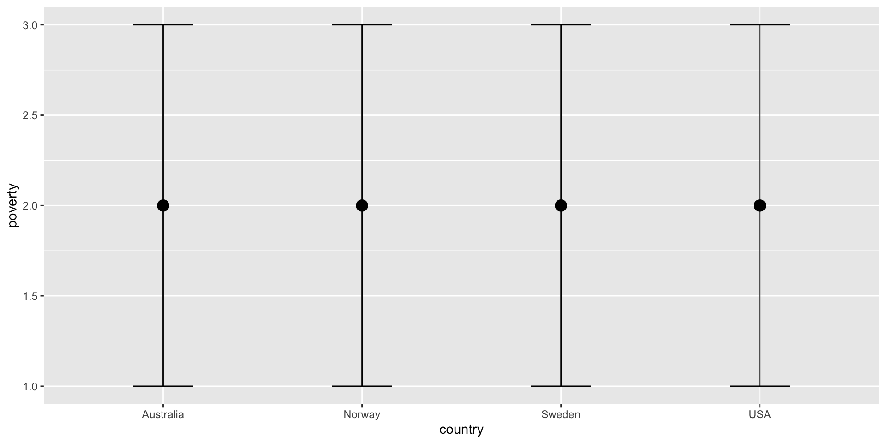
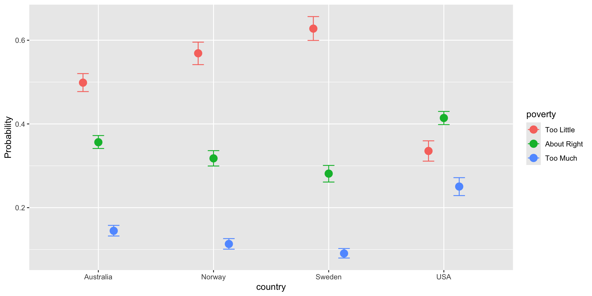

April 15, 2026
Last time we learned abou the Bernoulli and Binomial GLMs with with logit link function.
Today we will learn more about some more GLMs:

Recall that the Poisson distribution has one parameter \(\lambda > 0\). The “log” link is appropriate for poisson regression because it transforms a non-negative value to the entire real number line. This ensures that \(\hat{\lambda\) is a positive value.
\[\begin{align*} y_i & \sim Pois(\lambda_i) \\ \log(\lambda_i) & = {\sf linear\,\,combination\,\,of\,\,predictors} \end{align*}\]
To use the Poisson distribution with a log link in brms, we set:
However, the Poisson distribution is restrictive and may not be a good fit to overdispersed data, that is, data that are more variable than the model (e.g., the Poisson) expects.
The negative binomial distribution allows more variability than the Poisson distribution does.
The expected value and variance of the negative binomial value is
\[E(X) = \mu\] \[var(X) = \mu + \frac{\mu^2}{\phi}\]
By estimating a second parameter \(\phi\), we can flexibly account for overdispersion.
In R’s dnbinom function, the size argument corresponds to \(\phi\).

As with the Poisson distribution, we typically use a log link for \(\mu\).
\[\begin{align*} y_i & \sim NegBin(\mu_i, \phi) \\ \log(\mu) & = {\sf linear\,\,combination\,\,of\,\,predictors} \\ \phi & \sim \_\_ \end{align*}\]
To use the negative binomial distribution with a log link in brms, we set:
In business, an interlock occurs when an individual sits on the executive board or holds an executive position for more than one company at the same time.
The Ornstein data in the carData package provides the number of interlocks for 248 Canadian businesses in the 1970s.
Today, we will predict the number of interlocks from each business’s assets
assets is in millions of dollars and highly skewed. We will have a more stable model (i.e., better fit, better MCMC convergence) if we log-transform assets as a predictor.
assets sector nation interlocks log_assets
Min. : 62 MIN :54 CAN:117 Min. : 0.00 Min. : 4.127
1st Qu.: 519 MAN :48 OTH: 18 1st Qu.: 3.00 1st Qu.: 6.252
Median : 1397 AGR :47 UK : 17 Median : 9.00 Median : 7.242
Mean : 5978 FIN :22 US : 96 Mean : 13.58 Mean : 7.427
3rd Qu.: 4326 MER :20 3rd Qu.: 18.00 3rd Qu.: 8.372
Max. :147670 WOD :19 Max. :107.00 Max. :11.903
(Other):38 First, let us look at the prior setup for the Poisson model:
\[\begin{align*} {\sf interlock}_i & \sim Pois(\lambda_i) \\ \log(\lambda_i) & = a + b $\times \ln({\sf assets}) \end{align*}\]
We may have no idea where to start with prior predictive simulation. Why not start with \(N(0, 1)\) on both the intercept and the slope?
These priors lead to a few draws with very high predictions (max # of interlocks is 107 in the data)
Although these priors make some silly predictions, they may be okay for our purposes. The limited \(y\) axis plot shows many plausible mean predictions.
The full model is:
\[\begin{align*} {\sf interlock}_i & \sim Pois(\lambda_i) \\ \log(\lambda_i) & = a + b $\times \ln({\sf assets}) \\ a & \sim N(0, 1) \\ b & \sim N(0, 1) \end{align*}\]
Let’s fit the model!
It looks like our standard normal priors weren’t too far off from the final estimates.
Family: poisson
Links: mu = log
Formula: interlocks ~ log(assets)
Data: Ornstein (Number of observations: 248)
Draws: 4 chains, each with iter = 2000; warmup = 1000; thin = 1;
total post-warmup draws = 4000
Regression Coefficients:
Estimate Est.Error l-95% CI u-95% CI Rhat Bulk_ESS Tail_ESS
Intercept -1.04 0.09 -1.21 -0.86 1.00 1358 1845
logassets 0.46 0.01 0.44 0.48 1.00 1494 2239
Draws were sampled using sampling(NUTS). For each parameter, Bulk_ESS
and Tail_ESS are effective sample size measures, and Rhat is the potential
scale reduction factor on split chains (at convergence, Rhat = 1).The Poisson model does an okay job at predicting the mean, but misses much of the variability in the data.

The negative binomial allows for overdispersion in the data and may do a better job than the Poisson at predicting points.
prior class coef group resp dpar nlpar lb ub tag
(flat) b
(flat) b logassets
student_t(3, 2.2, 2.5) Intercept
inv_gamma(0.4, 0.3) shape 0
source
default
(vectorized)
default
defaultLet’s try \(\phi \sim Exponential(10)\). This roughly means that the expected variance is 10x as large as that for the Poisson.
Although these priors make some very large predictions, this may be an appropriately skeptical prior.

Family: negbinomial
Links: mu = log
Formula: interlocks ~ log(assets)
Data: Ornstein (Number of observations: 248)
Draws: 4 chains, each with iter = 2000; warmup = 1000; thin = 1;
total post-warmup draws = 4000
Regression Coefficients:
Estimate Est.Error l-95% CI u-95% CI Rhat Bulk_ESS Tail_ESS
Intercept -1.07 0.34 -1.74 -0.41 1.00 3800 3016
logassets 0.46 0.04 0.37 0.55 1.00 3948 3225
Further Distributional Parameters:
Estimate Est.Error l-95% CI u-95% CI Rhat Bulk_ESS Tail_ESS
shape 1.14 0.12 0.92 1.39 1.00 4752 2833
Draws were sampled using sampling(NUTS). For each parameter, Bulk_ESS
and Tail_ESS are effective sample size measures, and Rhat is the potential
scale reduction factor on split chains (at convergence, Rhat = 1).The negative binomial does a better job at capturing values for companies with high assets, but not as good a job for companies with fewer assets.

Perhaps we should take into account zero-inflation, the fact that several companies have no interlocks.
Now we have one more parameter zi which represents the proportion of zeroes.
The Beta distribution is an appropriate prior for zi since it bounded between 0 and 1. We might expect that fewer than half of companies have no interlocks, so maybe a Beta(1, 5) prior is appropriate?

Family: zero_inflated_negbinomial
Links: mu = log
Formula: interlocks ~ log(assets)
Data: Ornstein (Number of observations: 248)
Draws: 4 chains, each with iter = 2000; warmup = 1000; thin = 1;
total post-warmup draws = 4000
Regression Coefficients:
Estimate Est.Error l-95% CI u-95% CI Rhat Bulk_ESS Tail_ESS
Intercept -0.95 0.33 -1.61 -0.30 1.00 3277 2464
logassets 0.45 0.04 0.37 0.53 1.00 3434 2602
Further Distributional Parameters:
Estimate Est.Error l-95% CI u-95% CI Rhat Bulk_ESS Tail_ESS
shape 1.26 0.16 0.99 1.60 1.00 2551 2370
zi 0.03 0.02 0.00 0.08 1.00 1718 1190
Draws were sampled using sampling(NUTS). For each parameter, Bulk_ESS
and Tail_ESS are effective sample size measures, and Rhat is the potential
scale reduction factor on split chains (at convergence, Rhat = 1).
Does accounting for zero inflation improve our model? Use the loo to compare the three models that we fit. Which provides the best tradeoff between complexity and fit?
We have learned how to outcome variables that are both continuous and categorical. In addition to those, ordered categorical variables are often used in psychology in the form of Likert scales.
When we use Likert scale (or other ordered categorical variable) as our outcome, we need to specify the family as:
The WVS dataset includes information surveyed from the 1995-1997 World Values Survey.
We are interested in predicting responses to poverty: “Do you think that what the government is doing for people in poverty in this country is…” (1) “Too Little”, (2) “About Right”, (3) “Too Much”
\(logit[P({\sf too\,little})] = Q_1 = a_1 + b_1 * {\sf predictor}\)
\(logit[P({\sf too\,little}) + P({\sf about\,right})] = Q_2 = a_2 + b * \sf{predictor}\)
\(P({\sf too\,much}) = 1 - P({\sf about\,right}) - P({\sf too\,little})\)
We want to predict poverty (already an ordered categorical variable) from country (Australia, Norway, Sweden, USA). For ordered categorical outcomes, brms does not allow us to use the index variable approach. Instead, it looks as if Australia is the default category and that the b coefficients correspond to the differences between each country and Australia.
prior class coef group resp dpar nlpar lb ub tag
(flat) b
(flat) b countryNorway
(flat) b countrySweden
(flat) b countryUSA
student_t(3, 0, 2.5) Intercept
student_t(3, 0, 2.5) Intercept 1
student_t(3, 0, 2.5) Intercept 2
source
default
(vectorized)
(vectorized)
(vectorized)
default
(vectorized)
(vectorized)Let’s try using standard normal priors for all intercepts and slopes.
These priors give mean predictions at the middle response value. Unfortunately, they’re a bit narrower for Australia than the other countries, but not by much.

Predictions of actual responses span the available range and are the same for each country.

Let’s fit the model!
Family: cumulative
Links: mu = logit
Formula: poverty ~ country
Data: WVS (Number of observations: 5381)
Draws: 4 chains, each with iter = 2000; warmup = 1000; thin = 1;
total post-warmup draws = 4000
Regression Coefficients:
Estimate Est.Error l-95% CI u-95% CI Rhat Bulk_ESS Tail_ESS
Intercept[1] -0.00 0.04 -0.09 0.08 1.00 3188 2707
Intercept[2] 1.78 0.05 1.68 1.88 1.00 3681 2825
countryNorway -0.28 0.07 -0.42 -0.14 1.00 3317 2967
countrySweden -0.53 0.08 -0.68 -0.38 1.00 3663 2913
countryUSA 0.68 0.07 0.54 0.82 1.00 3367 2664
Further Distributional Parameters:
Estimate Est.Error l-95% CI u-95% CI Rhat Bulk_ESS Tail_ESS
disc 1.00 0.00 1.00 1.00 NA NA NA
Draws were sampled using sampling(NUTS). For each parameter, Bulk_ESS
and Tail_ESS are effective sample size measures, and Rhat is the potential
scale reduction factor on split chains (at convergence, Rhat = 1).categorical = TRUE allows us to see the actual posterior distribution of predictions. Do these results surprise you?

Choose one of the models that we fit in today’s lecture. Select one or two other variables available in that data set to add to your model as predictors.
What prior will you choose for the new predictor(s)? Consider whether it is advisable to rescale the variable(s).
Fit the model and interpret the numeric/visual output.
Compare the model fit to that of the original model. Can you improve fit over the previous model?
Bonus. Explore different ways of visualizing your model results. Look at the options available in conditional_effects and/or consult the internet.